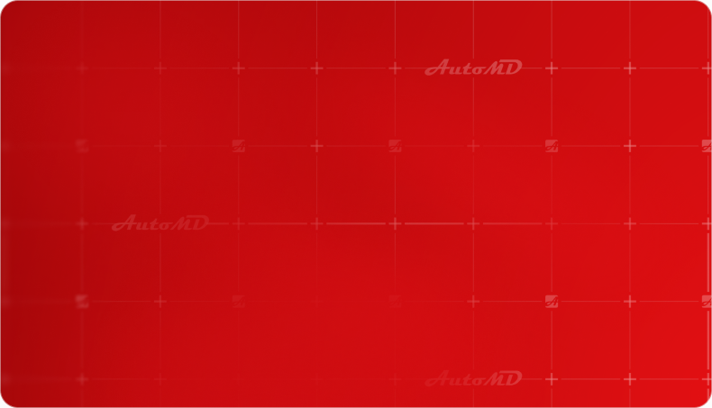
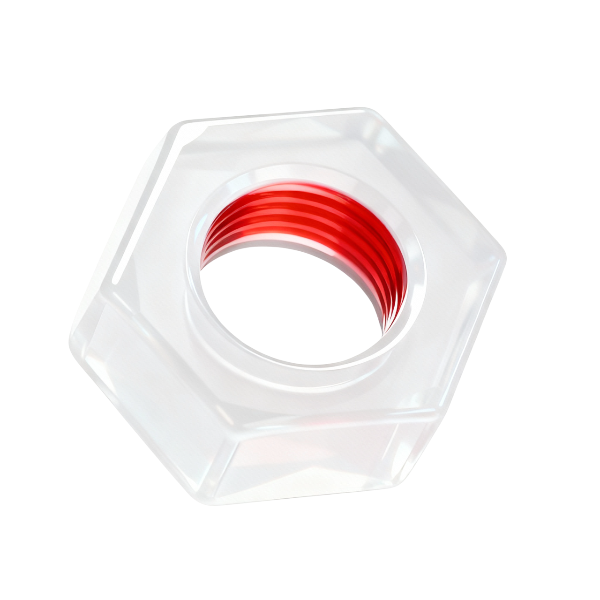

AutoMD — профессиональный автотехцентр в Москве
Ремонт, ТО, диагностика и подбор запчастей для коммерческого транспорта и популярных рабочих моделей.
Более 15 лет AutoMD помогает владельцам автомобилей, компаниям и автопаркам быстро возвращать машины в работу: проводим диагностику, согласовываем ремонт, подбираем запчасти и выполняем обслуживание в техцентре.
- 15+ лет опыта
- Коммерческий транспорт в фокусе
- Запчасти и установка в одном месте
- Работаем с физическими и юридическими лицами
- Диагностика перед ремонтом
- Консультация по автопарку
Знаем коммерческий транспорт и понимаем цену простоя
AutoMD — это автотехцентр, который специализируется на ремонте и обслуживании автомобилей, ежедневно используемых в доставке, перевозках, строительстве, сервисных службах и других рабочих задачах.
Мы понимаем, что для владельца коммерческого транспорта автомобиль — это не просто средство передвижения, а рабочий инструмент. Если машина простаивает, срываются заказы, маршруты и планы. Поэтому главная задача AutoMD — быстро определить проблему, подобрать решение и вернуть автомобиль в эксплуатацию.
В одном месте можно пройти диагностику, выполнить плановое ТО, отремонтировать узлы, подобрать запчасти, заказать детали через интернет-магазин и записаться на установку.
Наша специализация
Смотреть все
Ford

Peugeot

Citroen

Iveco

Peugeot
Iveco
Peugeot
Peugeot
Citroen
Iveco
Peugeot
Основной фокус AutoMD — автомобили, которые чаще всего используются в работе: фургоны, микроавтобусы, малотоннажный коммерческий транспорт и городские рабочие автомобили.
Для этих автомобилей мы знаем типовые неисправности, частые работы, особенности обслуживания и подбора запчастей. Это помогает быстрее проводить диагностику, точнее рассчитывать стоимость и сокращать время ремонта.
Команда AutoMD
В AutoMD с автомобилем работает не один человек, а команда: менеджер уточняет задачу и помогает с записью, мастер проводит диагностику и ремонт, специалист по запчастям подбирает совместимые детали, а приемщик объясняет клиенту ход работ, сроки и стоимость.
Такой подход помогает быстрее находить причину неисправности, точнее подбирать запчасти и понятнее согласовывать ремонт.

Мастера и автослесари
Выполняют диагностику, ТО, ремонт и замену узлов. Работают с коммерческим транспортом и знают особенности популярных моделей

Специалисты по запчастям
Подбирают новые, оригинальные, аналоговые и б/у детали по марке, модели, году выпуска, VIN или артикулу

Диагносты
Проверяют электронные системы, двигатель, ходовую, тормозную систему, электрику и помогают определить реальную причину неисправности

Мастера-приемщики
Принимают автомобиль, фиксируют задачу клиента, согласовывают работы и объясняют, что происходит с машиной на каждом этапе

Менеджеры по работе с клиентами
Помогают выбрать техцентр, записаться на удобное время, уточнить стоимость, наличие запчастей и условия обслуживания
Запчасти и интернет-магазин
AutoMD помогает подобрать новые и б/у запчасти для ремонта, ТО и замены узлов. Актуальный ассортимент, наличие и цены доступны в интернет-магазине.
Если клиент не знает точный артикул, менеджер может помочь с подбором по марке, модели, году выпуска или VIN. После выбора детали можно оформить покупку, уточнить доставку или записаться на установку в техцентре.
- Оригинальные запчасти
- Качественные аналоги
- Б/у детали
- Расходники для ТО
- Детали двигателя
- КПП и комплектующие
- Тормозную систему
- Подвеску
- Электрику
- Кузовные элементы
Почему выбирают AutoMD
Запчасти на складе
Для популярных моделей многие детали есть в наличии — не нужно ждать поставку неделями
Ремонт за 1 день
Большинство типовых работ выполняем в день обращения после диагностики и согласования
Гарантия на работы и запчасти
После ремонта объясняем, что было сделано, и фиксируем условия обслуживания.
Профильная экспертиза
Основной фокус — Fiat Ducato, Ford Transit, Citroen Jumper, Iveco Daily, Peugeot Boxer, Peugeot Partner, Citroen Berlingo, Sollers Atlant и JAC Sunray
Сервис и запчасти в одном месте
Подбираем детали, согласовываем стоимость, выполняем ремонт и выдаем автомобиль с гарантией
Работа с физлицами и бизнесом
Обслуживаем личные автомобили, коммерческий транспорт и автопарки компаний


Как проходит обслуживание
- 01Клиент оставляет заявку на сайте или звонит в AutoMD
- 02Менеджер уточняет автомобиль, задачу и удобное время
- 03Автомобиль принимают в техцентре
- 04Мастер проводит диагностику или осмотр
- 05Мы согласовываем список работ, сроки и стоимость
- 06Подбираем запчасти, если они нужны
- 07Проверка автомобиля после услуги
- 08Рекомендации по дальнейшему обслуживанию
Для юридических лиц
AutoMD помогает компаниям быстрее возвращать автомобили в работу: выполняем диагностику, ТО, ремонт, подбор и установку запчастей для коммерческого транспорта
Подходит для
- Служб доставки
- Курьерских компаний
- Строительных организаций
- Сервисных служб
- Производственных компаний
- Транспортных компаний
- Подбор запчастей
- Безналичная оплата
- Закрывающие документы
- Приоритетная запись
- Обслуживание нескольких автомобилей
- Персональная консультация по автопарку

Выберите удобный техцентр AutoMD
Южный
- Адрес
- метро Пражская, г. Москва, Красного маяка, 16
- Телефон
- +7 (495) 477-50-29
- Время работы
- Пн-Вс, 08:00-20:00
Северный
- Адрес
- метро Ховрино, г. Москва, Ижорская улица, 8с1
- Телефон
- +7 (495) 477-50-29
- Время работы
- Пн-Вс, 08:00-20:00

Не просто ремонтируем, а помогаем принять правильное решение
В AutoMD важно не только выполнить работу, но и объяснить клиенту, что происходит с автомобилем. Мы стараемся говорить понятно: какая проблема найдена, какие варианты решения есть, какие запчасти можно использовать и сколько времени займет ремонт.
Такой подход особенно важен для коммерческого транспорта. Когда автомобиль используется каждый день, владельцу важно быстро принять решение: ремонтировать сейчас, планировать обслуживание, заказать запчасть или сначала провести диагностику.

Гарантии и сервис
После ремонта или обслуживания клиент получает понятную информацию о выполненных работах, установленных запчастях и рекомендациях по дальнейшей эксплуатации автомобиля.
- Гарантия на работы
- Гарантия на запчасти
- Условия обращения после ремонта
- Рекомендации по эксплуатации
- Повторная консультация по выполненным работам
Часто задаваемые вопросы
Можно ли записаться, если я не нашёл свою модель на сайте?
Да. Оставьте контакты — менеджер уточнит модель, год выпуска и подберёт подходящий техцентр.
Можно ли узнать цену до визита в техцентр?
Предварительную стоимость рассчитаем по модели и задаче. Точную цену подтвердим после диагностики.
Можно ли сразу купить запчасть и установить её у вас?
Да, подберём совместимую деталь и согласуем установку в одном из техцентров AutoMD.
Есть ли запчасти для моей модели?
Многие детали для популярных моделей есть на складе. Остальные закажем после проверки совместимости.
Работаете ли вы с юридическими лицами?
Да, обслуживаем отдельные автомобили и автопарки, предоставляем безналичную оплату и документы.
Есть ли гарантия на ремонт?
Гарантийные условия фиксируются в документах и зависят от выполненных работ и установленных деталей.
Можно ли приехать без записи?
Можно, но предварительная запись поможет сократить ожидание и заранее проверить наличие запчастей.
Как получить консультацию по автопарку?
Оставьте заявку и укажите количество автомобилей — менеджер свяжется с вами и уточнит задачи.

Поможем уточнить модель и подобрать решение
Оставьте контакты — менеджер уточнит марку, модель, год выпуска и задачу. После этого подскажем, какие услуги доступны и в какой техцентр лучше записаться.
О сервисе AutoMD
AutoMD специализируется на ремонте и обслуживании коммерческого транспорта в Москве. Профильные мастера, диагностическое оборудование и собственный подбор запчастей помогают быстрее находить неисправности и возвращать автомобили в работу.
Мы проводим плановое ТО, диагностику двигателя, ходовой, тормозной системы и электрики, ремонтируем основные узлы и подбираем совместимые детали для популярных рабочих моделей.
У разных автомобилей отличаются регламенты ТО, стоимость работ, доступность запчастей и типовые неисправности. Поэтому основной путь начинается с выбора марки, модели и конкретной задачи.